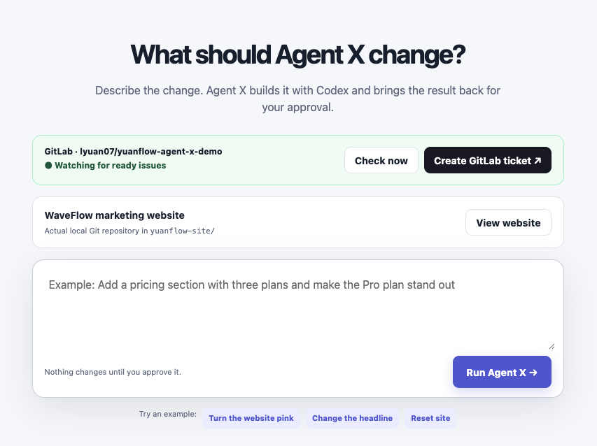

◎
One clear workspace
Projects, decisions, owners, and customer context stay connected and easy to find.
Test Website gives growing teams one clear place to plan customer work, automate the busywork, and keep every promise.

Trusted by thoughtful teams at
Your team gets a shared operating rhythm without another complicated system to maintain.
Projects, decisions, owners, and customer context stay connected and easy to find.
Automate the repetitive steps while keeping people in control of meaningful decisions.
See what changed, what passed, and what still needs attention before work moves forward.